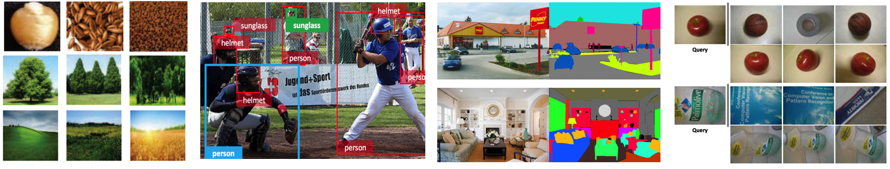

CVPR 2019 Tutorial onTextures, Objects, Scenes: From Handcrafted Features to CNNs and Beyond |
||
Room 104C, Long Beach, CA, USA |
||

This tutorial aims to review computer vision techniques before and after the deep learning era, in critical domains such as object detection, texture classification, scene understanding and instance retrieval. In the computer vision community, dramatic evolution is witnessed in the past 25 years, especially in visual recognition. The tremendous success cannot be made possible without the development of feature representation and learning approaches, which are at the core of many visual recognition problems such as texture recognition, image classification, object detection and recognition, scene classification and content based instance retrieval.
In specific, we will focus on four closely related visual recognition problems at different levels: texture recognition, objects detection and recognition, scene understanding, and content based image retrieval. These problems have received significant attention from both academia and industry in the field of computer vision and pattern recognition. For each problem, this tutorial will firstly review the milestones in the two development stages, then present an overview of the current frontier and state of the art performance on leading benchmark datasets, and finally discuss the possible future research directions.
9:00 - 9:10 . Welcome
9:10 - 9:50 . Talk 1 by Li Liu: Texture Representations: From BoW to CNN
9:50 - 10:30 . Talk 2 by Bolei Zhou: Deep Visual Scene Understanding from Passive Perception to Active Perception
10:30 - 11:00 . Coffee Break.
11:00 - 11:40 . Talk 3 by Liang Zheng: Instance Retrieval: From BoW to CNN
11:40 - 12:00 . Talk 4 by Wanli Ouyang: Modeling Structures for Object Detection and Recognition
The webpage template is adapted from this.